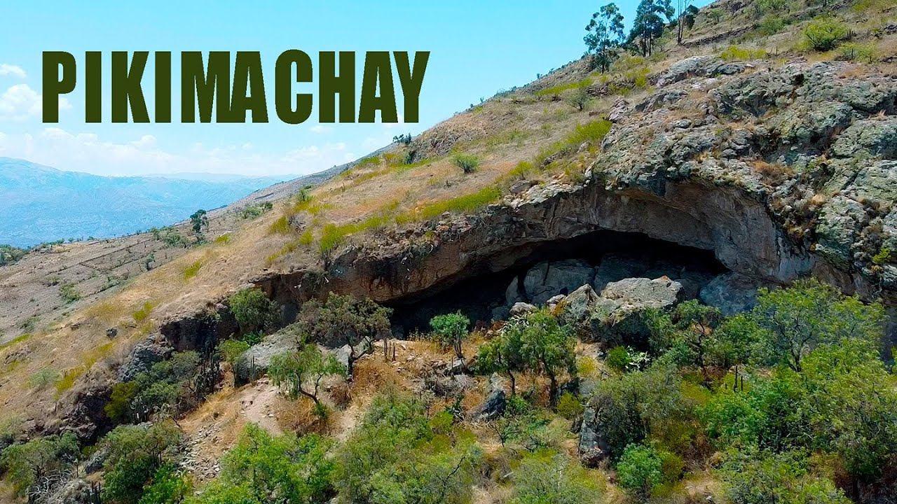
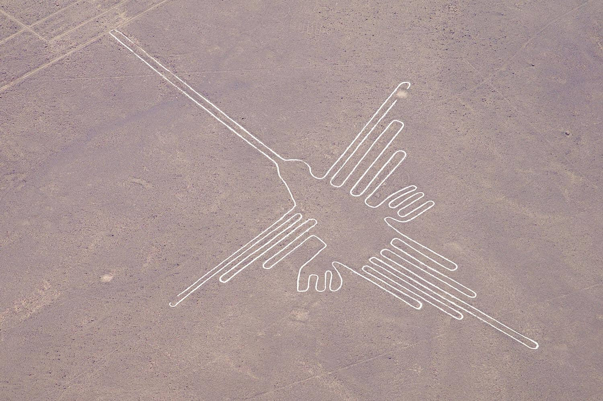
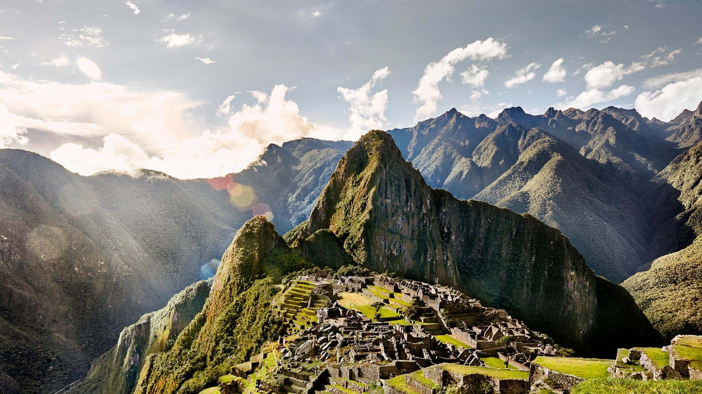
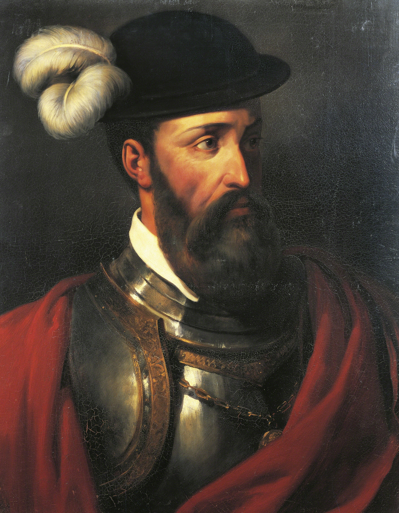
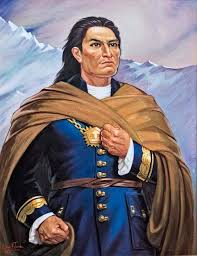
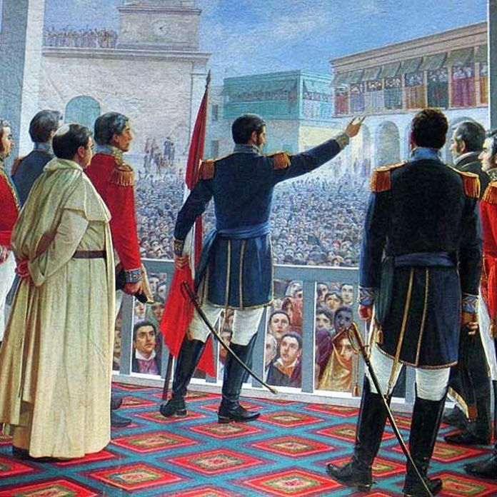
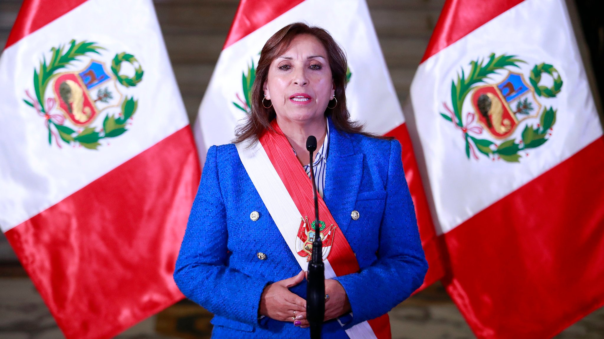

Il Perù: uno stato con più di 1000 anni di storia
Le origini preistoriche
I primi abitanti del Perù erano cacciatori nomadi che vivevano in grotte, come quella di Pikimachay ad Ayacucho.
Fino al 4.000 a.C. sapevano creare pelli, accendere il fuoco e costruire armi e utensili.
In seguito iniziarono l'agricoltura e la costruzione di edifici per scopi religiosi.

Le antiche civiltà pre-Inca
Tra le civiltà più importanti ci sono i Moche, vicino a Trujillo, che costruirono grandi piattaforme simili a piramidi, e i Nazca,
lungo la costa meridionale, famosi per la creazione di enormi disegni nel deserto, oggi conosciuti come le Linee di Nazca (in figura).
In seguito si sviluppò la civiltà Huari, con capitale vicino ad Ayacucho, e il regno di Chimor, con capitale Chan Chan.

L'Impero Inca
Fondato nel 1438 da Pachacútec, l'Impero Inca si estendeva sull'attuale Perù, Cile, Argentina, Colombia, Ecuador e Bolivia, con Cusco come capitale.
Gli Inca svilupparono una rete stradale, praticavano un'agricoltura avanzata con terrazzamenti sulle Ande e costruirono opere straordinarie come Machu Picchu.
L'imperatore, il Sapa, era considerato un dio.

La conquista spagnola
Nel 1532 Francisco Pizarro (in foto) arrivò in Perù approfittando della guerra civile tra i fratelli Atahualpa e Huáscar.
A Cajamarca catturò l'imperatore Atahualpa con l'inganno e lo fece giustiziare nel 1533, segnando l'inizio della caduta dell'impero.
Gli spagnoli portarono anche malattie come il vaiolo che decimarono le popolazioni indigene.
La resistenza Inca proseguì fino al 1572, quando l'ultimo sovrano Túpac Amaru fu giustiziato.

Il Vicereame del Perù
Nel 1535 la capitale fu spostata da Cusco a Lima, più comoda per i commerci sul mare. Il Vicereame del Perù nacque ufficialmente nel 1542.
Nel 1781 gli indigeni, sfruttati nelle miniere, si ribellarono guidati da José Gabriel Condorcanqui, (in foto) ma la rivolta fu soffocata con il massacro di oltre 80.000 persone.

L'indipendenza
Nel 1820 il generale argentino José de San Martín (in foto) avanzò verso il Perù dopo aver liberato il Cile, entrando a Lima nel 1821 e dichiarando l'indipendenza il 28 luglio.
La resistenza spagnola nelle zone interne continuò però, finché Simón Bolívar non la concluse definitivamente con le battaglie di Junín e Ayacucho nel 1824.

L'epoca repubblicana e il Perù oggi
Dopo l'indipendenza il Perù affrontò guerre territoriali, tra cui la Guerra del Pacifico (1879–1884) contro Cile e Bolivia, che si concluse con il Trattato di Ancón.
In tempi moderni il paese è emerso come democrazia. Dal 2022 la presidente è Dina Boluarte. (in foto)
Oggi il Perù è un paese di straordinaria bellezza naturale e culturale, con siti come Machu Picchu, la foresta amazzonica e le Ande.
